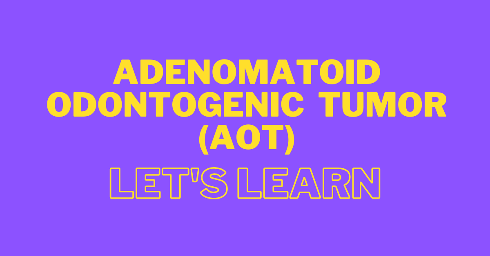
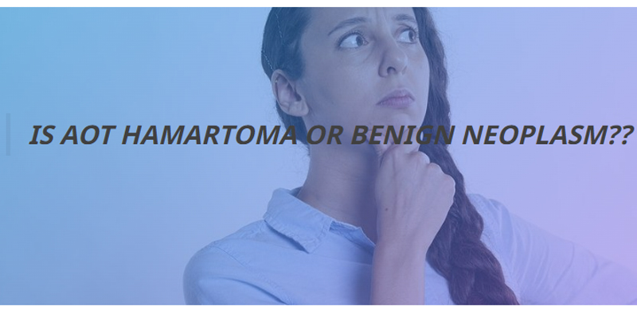
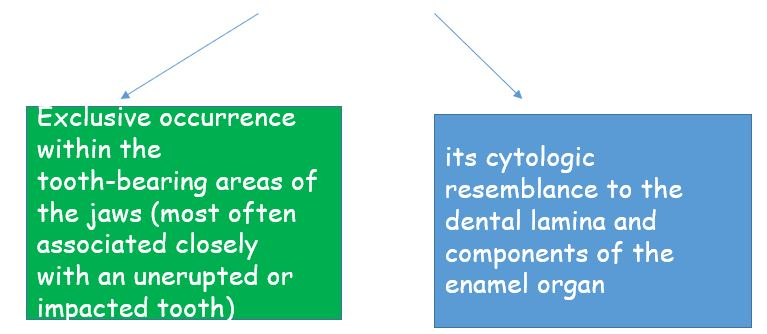
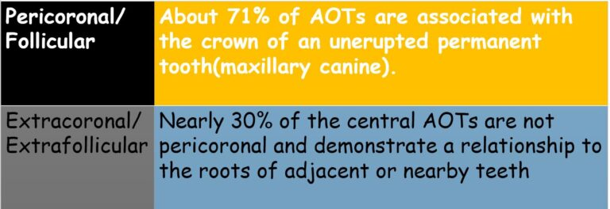
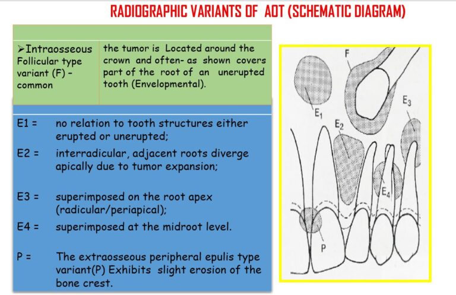
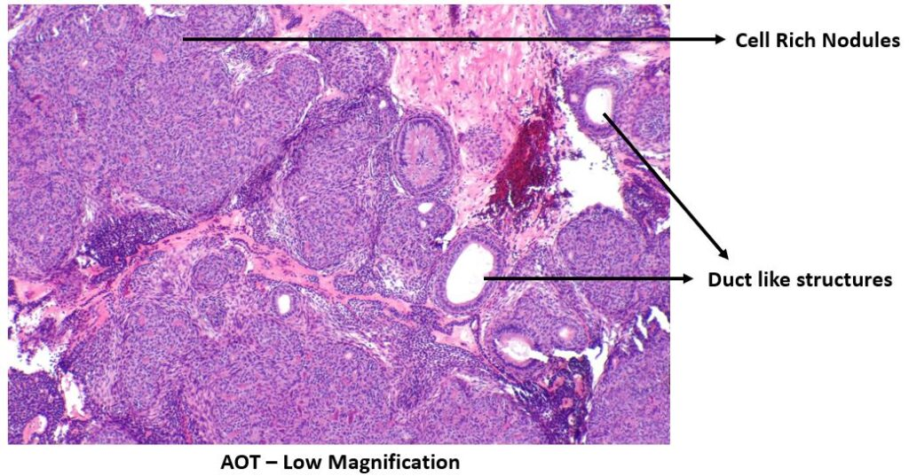
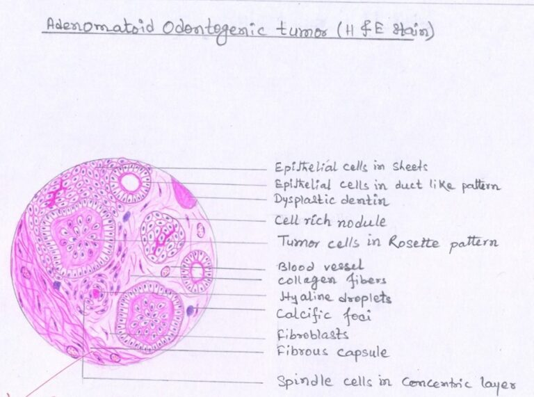

Hi Everyone, Sharing with you all what is Calcifying Epithelial Odontogenic Tumor. Study from this for your exams, score high and leave your comments below if these notes help you
Outline
After reading this post you will learn the following:-
- Introduction
- Definition
- Hamartoma Vs Benign Neoplasm
- Origin
- Clinical Features
- Radiographic Features
- Macroscopic Features
- Histopathologic Features
- Treatment & Prognosis

Introduction
- Uncommon Tumor – Approximately 3% to 7% of odontogenic tumors
- Mostly associated with an unerupted maxillary cuspid
- Also called as Two-third tumor or abbreviation used as AOT (Adenomatoid Odontogenic Tumor)
- Initially it was called as ADENOAMELOBLASTOMA or AMELOBLASTIC ADENOMATOID TUMOR since it was previously thought to be a variant of Solid Multicystic Ameloblastoma (SMA). But in 1969, Philipsen and Birn proved the tumor to be an entity clearly distinguishable from the SMA. Thus, they introduced the term ADENOMATOID ODONTOGENIC TUMOR, which was adopted by the World Health Organization (WHO) in 1973
Definition
Definition
According to WHO- “Adenomatoid odontogenic tumour (AOT) is composed of odontogenic epithelium in a variety of histoarchitectural patterns, embedded in a mature connective tissue stroma and characterized by slow but progressive growth.”
- Benign
- Odontogenic neoplasm exclusively epithelial in origin
- Uncommon (CEOT accounts for approximately 1% of all odontogenic tumors)
Hamartoma Vs Benign Neoplasm
AOT shows limited size and low recurrence. Due to these reasons many authorities believe that AOT is a hamartoma while others argue that its a benign neoplasm. Let’s see what points do they believe to consider it as Hamartoma or Benign Neoplasm:-

WHY HAMARTOMA
- Limited size of most cases is attributed to its minimal growth potential
- Lack of recurrence
WHY BENIGN NEOPLASM
- Limited size stems from the fact that most cases are detected early and removed before they grow to clinically noticeable size
- Microscopic features show greater departure from normal odontogenic apparatus
Origin :-
- Specific stimulus is unknown
- Although AOT is of odontogenic origin. Reasons:

Clinical Features
-
AGE – frequently in
young-age (73% in less than 20 years)
- Patients between 5-53 years of age, with a mean around 18 years
-
SEX – females 64%
contrasted to 36% males
- Thus, common in young females
-
SITE –
- Maxilla (65%) than in the mandible (35%)
- Anterior part of the jaws (76%)
- At least 74% of the cases associated with an unerupted tooth
- In over two-thirds of the cases associated tooth was the maxillary or mandibular cuspid
-
WHY CALLED AS TWO-THIRD
TUMOR??
- 2/3rd cases occur in:
- Maxilla
- Young patients (young females)
- Unerupted teeth
- Maxillary canine
- THUS CALLED AS TWO-THIRD TUMOR
- 2/3rd cases occur in:
- Diagnosed during routine radiographic examination or when R/G taken to know cause of a tooth’s non-eruption
- Generally asymptomatic
- Size – usually 1.5 and 3.0 cm
- Clinical swelling
- High percentage of these lesions being associated with unerupted teeth and present as dentigerous cysts (Dentigerous cyst encloses only the coronal portion of the impacted tooth, whereas AOT shows radiolucency usually surrounding both the coronal and radicular aspects of the involved tooth)
- May occur within the jaw bones (Intra-osseous, common) or within the gingiva (Extra-osseous or peripheral, rare)
-
Peripheral lesions
present as a:
- Painless, gingival-colored mass
- 1–1.5 cm in diameter
- 10 times more prevalent in the maxillary gingiva than in the mandibular gingiva
- Female to male ratio for the gingival lesion is 14:1
Radigraphic Features
- Well-demarcated
- Unilocular radiolucency
- Generally exhibits a smooth corticated (sometimes sclerotic) border
- Rare, multilocular cases
- Most lesions are pericoronal or juxtacoronal (around crown of an impacted tooth) but the radiolucency may extend apically beyond the cementoenamel junction on at least one side of the root
- 65% cases demonstrate faintly detectable radiopaque foci within the radiolucent lesion
- Divergence of roots and displacement of teeth common
- Root resorption less common
- Gingival lesions may cause slight erosion of the underlying alveolar bone cortex
Central AOTs

Peripheral AOTs

Macroscopic Features:-
- Soft, roughly spherical mass with a distinct fibrous capsule
- Intact specimens demonstrate the crown of an embedded tooth in the solid tumor mass or projecting into a cystic cavity
- White to tan solid to crumbly tissue
- One or more cystic spaces of varying size
- Minimal yellow-brown fluid to semisolid material
- Fine, hard 'gritty' granular material
- One to several larger calcified masses
Gross examination reveals –
Upon Gross sectioning –
Histopathologic Features –
- AOT exhibits diverse
histomorphologic features:
- Multinodular proliferation of spindle, cuboidal, and columnar cells in a variety of patterns
- Scattered duct-like structures
- Eosinophilic material
- Calcifications in several forms
- Delimited by a fibrous capsule of variable thickness
- Cytologic atypia is never a prominent feature
- At low magnification, the most striking pattern is that of variably sized solid nodules of cuboidal or columnar cells of odontogenic epithelium forming nests or rosette-like structures (rosette-like structures about a central space, which may be empty or contain small amounts of eosinophilic material) with minimal stromal connective tissue
- Although not present
in
all tumors, the most distinctive microscopic feature of
AOT is varying numbers of duct-like structures:
- Lumina of varying size
- Lined by a single layer of cuboidal to columnar epithelial cells
- Nuclei frequently polarized away from the lumen
- These duct-like or microcyst lumina frequently are lined by an eosinophilic rim of varying thickness (the so-called hyaline ring)
- The stellate reticulum-like spindle cells, and occasionally round or polygonal epithelial cells, dominate the tissue between the cell-rich nodules
- Some AOTs contain varying amounts of dysplastic dentin, dentinoid, and osteodentin
- Irregular to round calcified bodies which may exhibit areas with a concentric layered pattern (Liesegang rings) may be seen in parenchymal or stromal zones


Treatment & Prognosis :-
- Specific stimulus is unknown
- Although AOT is of odontogenic origin. Reasons:
References :-
- World Health Organization Classification of Tumors
- Shafer’s Textbook Of Oral Pathology
- Neville – Oral & Maxillofacial Pathology
- Image-Wikipedia & Wikimedia Commons